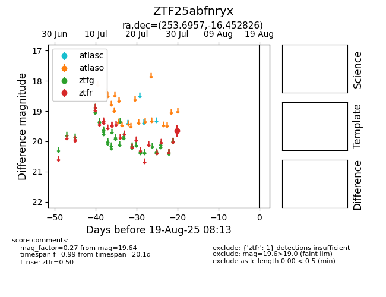

Target ZTF25abfnryx at 2025-08-19 09:59, see:
FINK: fink-portal.org/ZTF25abfnryx
Lasair: lasair-ztf.lsst.ac.uk/objects/ZTF25abfnryx
ALeRCE: alerce.online/object/ZTF25abfnryx
alt names
ZTF25abfnryx (ztf,fink)
coordinates:
equatorial (ra, dec) = (253.6957,-16.45283)
galactic (l, b) = (3.8821,+16.66603)
photometry
last ztfr=19.64
1 ztfr detections
